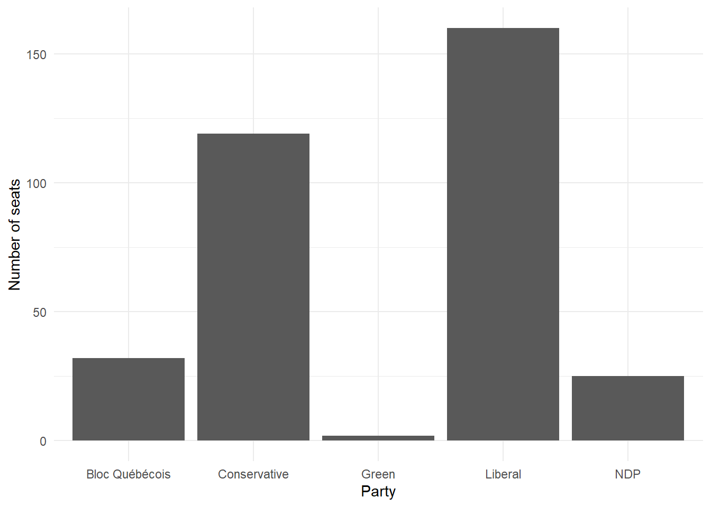

#### Preamble #
# Purpose: Read in data from Elections Canada and see how many seats each party won
# Author: Luca Carnegie
# Email: luca.carnegie@mail.utoronto.ca
# Date: 10 Jan 2023
# Prerequisites: The Australian example Exploring the Canadian Election
#### Workspace setup ####
# install.packages("tidyverse")
# install.packages("janitor")
# install.packages("gtranslate")
library(tidyverse)Warning: package 'tidyverse' was built under R version 4.3.2Warning: package 'ggplot2' was built under R version 4.3.2Warning: package 'tibble' was built under R version 4.3.2Warning: package 'tidyr' was built under R version 4.3.2Warning: package 'readr' was built under R version 4.3.2Warning: package 'purrr' was built under R version 4.3.2Warning: package 'dplyr' was built under R version 4.3.2Warning: package 'stringr' was built under R version 4.3.2Warning: package 'forcats' was built under R version 4.3.2Warning: package 'lubridate' was built under R version 4.3.2── Attaching core tidyverse packages ──────────────────────── tidyverse 2.0.0 ──
✔ dplyr 1.1.4 ✔ readr 2.1.4
✔ forcats 1.0.0 ✔ stringr 1.5.1
✔ ggplot2 3.4.4 ✔ tibble 3.2.1
✔ lubridate 1.9.3 ✔ tidyr 1.3.0
✔ purrr 1.0.2
── Conflicts ────────────────────────────────────────── tidyverse_conflicts() ──
✖ dplyr::filter() masks stats::filter()
✖ dplyr::lag() masks stats::lag()
ℹ Use the conflicted package (<http://conflicted.r-lib.org/>) to force all conflicts to become errorslibrary(janitor)Warning: package 'janitor' was built under R version 4.3.2
Attaching package: 'janitor'
The following objects are masked from 'package:stats':
chisq.test, fisher.testlibrary(gtranslate)Warning: package 'gtranslate' was built under R version 4.3.2# Simulated Data
simulated_data <-
tibble(
# Use 1 through to 151 to represent each division
"Division" = 1:338,
# Randomly pick an option, with replacement, 338 times
"Party" = sample(
x = c("Liberal", "Conservative", "New Democratic", "Green", "Bloc Québécois", "Other"),
size = 338,
replace = TRUE
)
)
simulated_data# A tibble: 338 × 2
Division Party
<int> <chr>
1 1 Bloc Québécois
2 2 Other
3 3 Bloc Québécois
4 4 Other
5 5 Green
6 6 Bloc Québécois
7 7 Other
8 8 Conservative
9 9 Other
10 10 Green
# ℹ 328 more rows#Real Data
## Read in Elections Canada Data ##
raw_elections_data <-
read_csv(
file = "https://www.elections.ca/res/rep/off/ovr2021app/53/data_donnees/table_tableau11.csv",
show_col_types = FALSE,
)
#Save elections data locally
write_csv(
x = raw_elections_data,
file = "cad_voting.csv"
)## Clean Data ##
# Basic cleaning #
raw_elections_data <-
read_csv(
file = "cad_voting.csv",
show_col_types = FALSE
)
# Make the names easier to type
cleaned_elections_data <-
clean_names(raw_elections_data)
#Make the names shorter
cleaned_elections_data <-
cleaned_elections_data |>
rename(
electoral_district = electoral_district_name_nom_de_circonscription,
elected_candidate = elected_candidate_candidat_elu
)
#Get the winning party, in French
cleaned_elections_data <-
cleaned_elections_data |>
separate(
col = elected_candidate,
into = c("Other", "party"),
sep = "/"
) |>
select(-Other)
#cleaned_elections_data$party |>
# unique()
#Translate the column back to English
cleaned_elections_data <-
cleaned_elections_data |>
mutate(
elected_party =
case_match(
party,
"Libéral" ~ "Liberal",
"Conservateur" ~ "Conservative",
"NPD-Nouveau Parti démocratique" ~ "NDP",
"Parti Vert" ~ "Green",
"Bloc Québécois" ~ "Bloc Québécois"
)
)
cleaned_elections_data# A tibble: 338 × 14
province electoral_district electoral_district_n…¹ population
<chr> <chr> <dbl> <dbl>
1 Newfoundland and Labrad… Avalon 10001 86494
2 Newfoundland and Labrad… Bonavista--Burin-… 10002 74116
3 Newfoundland and Labrad… Coast of Bays--Ce… 10003 77680
4 Newfoundland and Labrad… Labrador 10004 27197
5 Newfoundland and Labrad… Long Range Mounta… 10005 86553
6 Newfoundland and Labrad… St. John's East/S… 10006 85697
7 Newfoundland and Labrad… St. John's South-… 10007 81979
8 Prince Edward Island/Îl… Cardigan 11001 36615
9 Prince Edward Island/Îl… Charlottetown 11002 36094
10 Prince Edward Island/Îl… Egmont 11003 34168
# ℹ 328 more rows
# ℹ abbreviated name: ¹electoral_district_number_numero_de_circonscription
# ℹ 10 more variables: electors_electeurs <dbl>,
# polling_stations_bureaux_de_scrutin <dbl>,
# valid_ballots_bulletins_valides <dbl>,
# percentage_of_valid_ballots_pourcentage_des_bulletins_valides <dbl>,
# rejected_ballots_bulletins_rejetes <dbl>, …#save the cleaned data
write_csv(
x = cleaned_elections_data,
file = "cleaned_elections_data.csv"
)## Exploring the Data ##
# Read the data #
cleaned_elections_data <-
read_csv(
file = "cleaned_elections_data.csv",
show_col_types = FALSE
)
#Seats each party Won
cleaned_elections_data |>
count(elected_party)# A tibble: 5 × 2
elected_party n
<chr> <int>
1 Bloc Québécois 32
2 Conservative 119
3 Green 2
4 Liberal 160
5 NDP 25#Make graph with ggplot
cleaned_elections_data |>
ggplot(aes(x = elected_party)) +
geom_bar() +
theme_minimal() + # Make the theme neater
labs(x = "Party", y = "Number of seats") # Make labels more meaningful